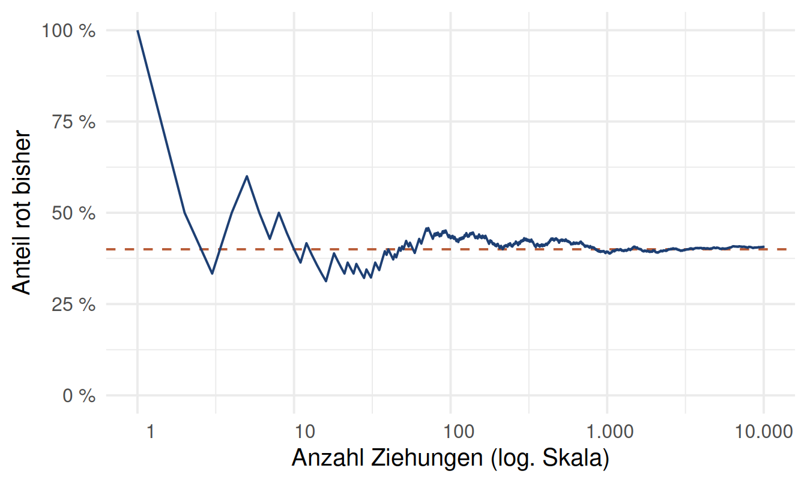
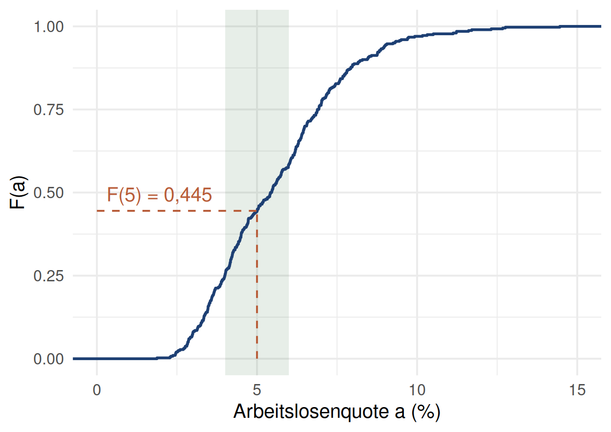
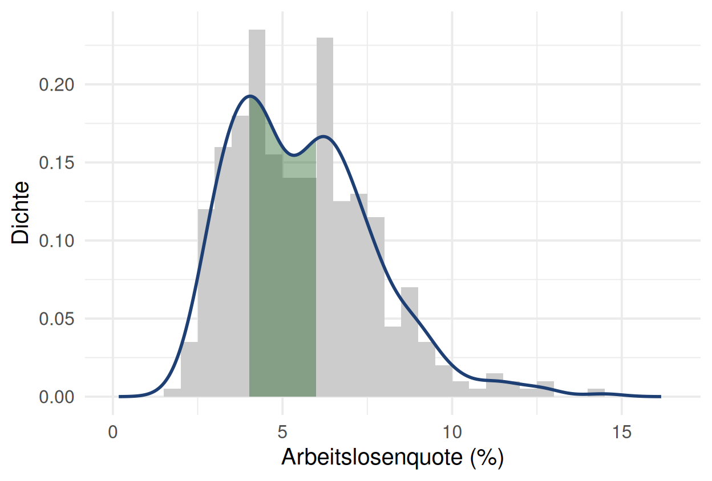
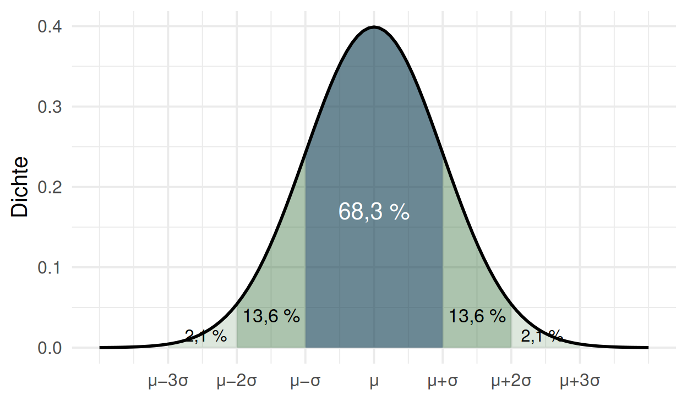
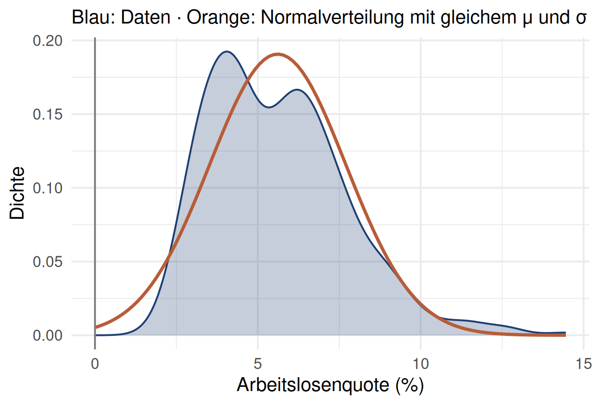
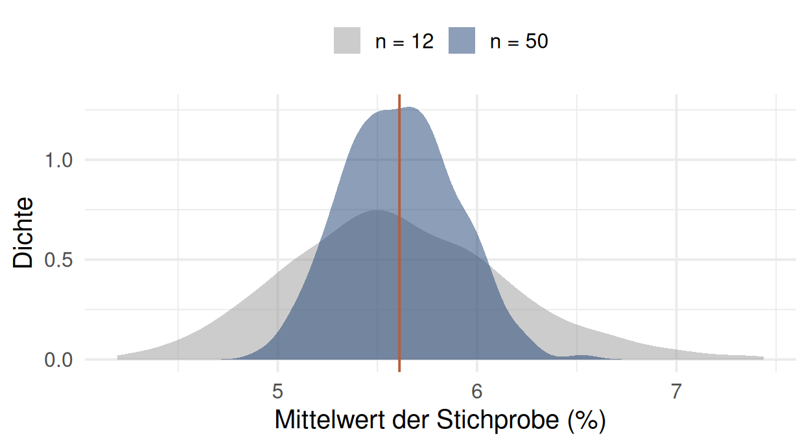
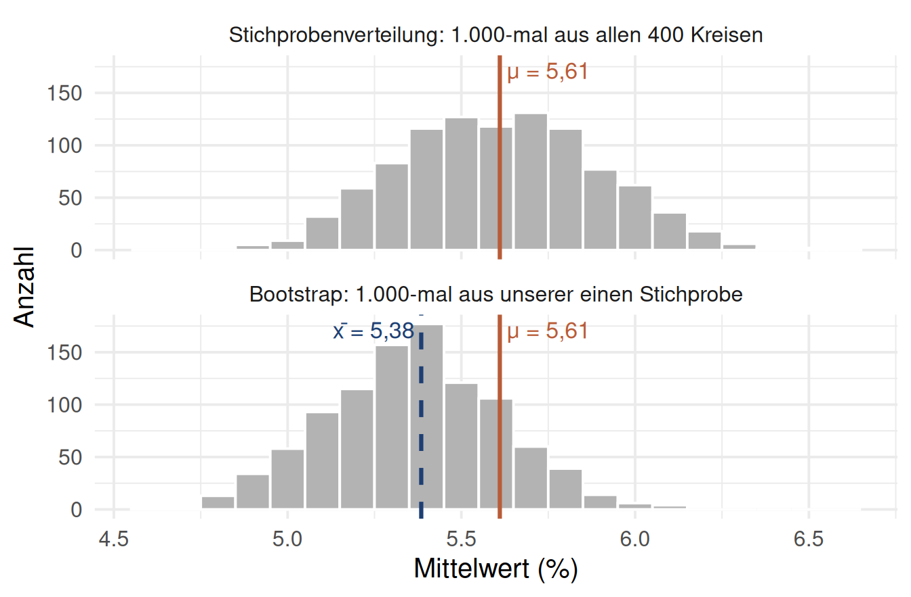
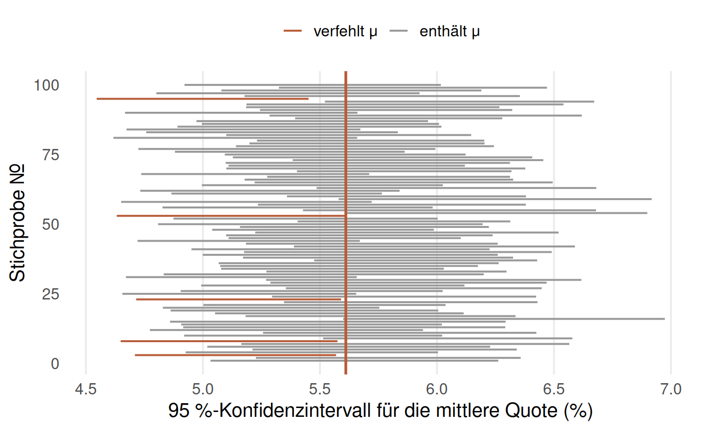

[1] "rot" "rot" "blau" "blau" "blau"[1] "blau"Vom Zufall zur Schätzunsicherheit: simulieren, verteilen, schätzen
Die mittlere Arbeitslosenquote der 400 Kreise liegt 2024 bei 5,61 % (Case-Study Teil 2).
Wir ziehen zufällig 50 der 400 Kreise und berechnen deren Mittelwert. Wie weit liegt er typischerweise vom wahren Wert entfernt? Weniger als 0,1 Prozentpunkte? Etwa 0,3? Mehr als 1?
Im Lauf der Stunde finden wir es heraus, und zwar auf zwei Wegen: einmal mit der Grundgesamtheit, die wir zufällig kennen, und einmal nur mit einer Stichprobe, wie im echten Leben.
Case-Study Teil 1 und 2: deskriptiv
Heute: der Schritt zur Induktion
Konfidenzintervalle stehen in fast jeder empirischen Arbeit, und nächstes Semester in jeder Regressionstabelle. Heute lernen Sie, woher sie kommen und was sie (nicht) bedeuten.
Simulieren → Verteilungen → Stichprobe und Konfidenzintervall
1. Simulieren
Wahrscheinlichkeiten am Computer ausrechnen: Urne, Black Jack, Monte Carlo
2. Verteilungen
Verteilungsfunktion, Dichte, Normalverteilung, und wann sie nicht passt
3. Schätzen
Stichprobe, Bootstrap, Konfidenzintervall, und wie man es richtig deutet
Ein Werkzeug trägt durch alle drei Teile: sample() und replicate(). Wer Ziehen und Wiederholen versteht, versteht Monte Carlo, Bootstrap und Konfidenzintervalle.
Simulieren → Verteilungen → Stichprobe und Konfidenzintervall
Nach diesem Abschnitt können Sie …
sample() und replicate() simulieren,In einer Urne liegen 2 rote und 3 blaue Kugeln. Wie wahrscheinlich ziehen Sie eine rote?
2/5 = 40 %, weil jede Kugel gleich wahrscheinlich gezogen wird.
Die Idee dahinter: Wiederholen Sie ein Experiment sehr oft, unabhängig und unter gleichen Bedingungen, dann nähert sich der Anteil, mit dem ein Ereignis eintritt, seiner Wahrscheinlichkeit.
Genau das kann der Computer: ein Experiment zehntausendmal wiederholen. Das heißt Monte-Carlo-Simulation.
[1] "rot" "rot" "blau" "blau" "blau"[1] "blau"set.seed(): Der Computer erzeugt Pseudo-Zufallszahlen. Mit demselben Seed kommt jedes Mal dasselbe heraus. Ohne Seed ist Ihr Ergebnis nicht reproduzierbar, auch nicht für Ihr Team.
🔮 Prognose: Nach 10 Ziehungen, nach 100, nach 10.000: Wie nah liegt der Anteil roter Kugeln an 40 %?

sample() zieht standardmäßig ohne Zurücklegen. Mit replace = TRUE kommt jede Kugel nach dem Ziehen zurück:
[1] "blau" "rot" "blau" "rot" "blau"[1] "blau" "blau" "blau" "rot" "rot" Mit Zurücklegen: Die Ziehungen sind unabhängig. Der erste Zug ändert nichts am zweiten.
Ohne Zurücklegen: Die Ziehungen sind abhängig. Nach einer roten Kugel ist nur noch eine rote in der Urne.
Beim Kartenspiel (52 Karten, 4 Asse) wird ohne Zurücklegen gegeben:
\[ \Pr(\text{2. Ass} \mid \text{1. Ass}) = \tfrac{3}{51} \qquad\text{Bei Unabhängigkeit: } \Pr(A \mid B) = \Pr(A) \]
Multiplikationsregel: Dass A und B eintreten:
\[ \Pr(A \text{ und } B) = \Pr(A) \cdot \Pr(B \mid A) \qquad\Rightarrow\qquad \Pr(\text{zwei Asse}) = \tfrac{4}{52} \cdot \tfrac{3}{51} \approx 0{,}45\,\% \]
Bei unabhängigen Ereignissen vereinfacht sich das zu \(\Pr(A)\cdot\Pr(B)\). Umgestellt liefert die Regel die bedingte Wahrscheinlichkeit: \(\Pr(B \mid A) = \Pr(A \text{ und } B) / \Pr(A)\).
Black Jack mit den ersten zwei Karten: ein Ass und eine Zehnerkarte (10, Bube, Dame, König; 16 Karten).
Zwei Reihenfolgen führen zum Ziel:
\[ \underbrace{\tfrac{4}{52}\cdot\tfrac{16}{51}}_{\text{Ass zuerst}} \;+\; \underbrace{\tfrac{16}{52}\cdot\tfrac{4}{51}}_{\text{Zehner zuerst}} \;=\; 2 \cdot \tfrac{4 \cdot 16}{52 \cdot 51} \approx 4,83 % \]
Das geht noch im Kopf. Aber was ist mit “drei Karten, Summe 21”? Dann simulieren wir.
farben <- c("Kreuz", "Pik", "Herz", "Karo")
werte <- c("Ass", "König", "Dame", "Bube", "10", "9", "8", "7", "6", "5", "4", "3", "2")
deck <- paste(rep(farben, times = 13), rep(werte, each = 4))
asse <- paste(farben, "Ass"); zehner <- deck[sub(".* ", "", deck) %in% c("König", "Dame", "Bube", "10")]
black_jack <- function() {
hand <- sample(deck, 2) # ohne Zurücklegen
(hand[1] %in% asse & hand[2] %in% zehner) | (hand[2] %in% asse & hand[1] %in% zehner)
}
set.seed(2627)
mean(replicate(100000, black_jack())) # TRUE zählt als 1[1] 0.04882Simuliert und exakt (4,83 %) stimmen überein. mean() auf TRUE/FALSE liefert direkt den Anteil.
Prompt: “Simuliere die Wahrscheinlichkeit, mit den ersten zwei Karten Black Jack zu bekommen.”
black_jack_ki <- function() {
hand <- sample(deck, 2)
hand[1] %in% asse & hand[2] %in% zehner
}
set.seed(2627)
mean(replicate(100000, black_jack_ki()))[1] 0.02427“Die Wahrscheinlichkeit für einen Black Jack liegt bei etwa 2,4 %. Die Simulation mit 100.000 Wiederholungen ist sehr genau.”
2 Minuten: Der Code läuft, die Simulation ist genau. Warum ist das Ergebnis trotzdem falsch?
Eine große Zahl an Wiederholungen schützt vor Zufallsschwankung, nicht vor einem falschen Ereignis. Prüfen Sie Simulationen gegen einen Fall, den Sie exakt ausrechnen können.
Simulieren Sie die Wahrscheinlichkeit, mit den ersten zwei Karten zwei Asse zu bekommen. Exakt sind es \(\frac{4}{52}\cdot\frac{3}{51} \approx 0{,}45\,\%\).
Hinweis
Zwei Karten ziehen, ohne Zurücklegen (das ist der Standard). Beide Karten müssen in asse liegen.
Simulieren ✔ → Verteilungen → Stichprobe und Konfidenzintervall
Nach diesem Abschnitt können Sie …
pnorm() rechnen und prüfen, ob die Normalverteilung überhaupt passt.Urnen und Karten sind diskret: endlich viele Ausgänge, jeder mit einer Wahrscheinlichkeit.
Die Arbeitslosenquote ist stetig: Jeder Wert zwischen 1,88 % und 14,46 % ist möglich.
Ziehen wir zufällig einen der 400 Kreise: Wie wahrscheinlich hat er eine Quote von genau 5,000 %? Und eine zwischen 4 und 6 %?
Datentypen kurz: kategorial (Bundesland), ordinal (kalt < warm < heiß), numerisch diskret (Anzahl Arbeitslose: ganze Zahlen) oder stetig (Quote, Einkommen).
\[F(a) = \Pr(X \le a)\]
Anteil der Kreise mit einer Quote bis \(a\):

ecdf() = empirical cumulative distribution function. Weil sie aus Daten geschätzt ist, heißt sie empirische Verteilungsfunktion \(\hat F_n\).

geom_density()): glättet das Histogramm zu einer KurveDie y-Achse einer Dichte ist kein Anteil. Nur Flächen sind Anteile.
Durch zwei Zahlen bestimmt: Mittelwert \(\mu\) und Standardabweichung \(\sigma\). Symmetrisch, glockenförmig.

In R:
pnorm(a, mu, sigma) = \(\Pr(X \le a)\)qnorm(p, mu, sigma) = der Wert, unter dem der Anteil \(p\) liegt
🔮 Prognose: Wo passt sie gut, wo schlecht?
Prompt: “Wie viele der 400 Kreise haben eine Arbeitslosenquote unter 2 %?” Chat AI:
“Arbeitslosenquoten sind annähernd normalverteilt. Damit haben rund 17 Kreise eine Quote unter 2 %.”
2 Minuten: Wie würden Sie das prüfen? Was kommt heraus?
[1] 1# A tibble: 1 × 2
landkreis_name alo_quote
<chr> <dbl>
1 München 1.88Eine Verteilungsannahme ist eine Annahme. Prüfen Sie sie an den Daten, besonders an den Rändern, wo die interessanten Fälle liegen.
Welcher Anteil der Kreise hat eine Quote über 8 %? Berechnen Sie ihn einmal durch Zählen und einmal mit der Normalverteilung.
Hinweis
mean() auf einem logischen Vektor (x > 8) liefert den Anteil. pnorm(8, …) ist der Anteil bis 8, Sie brauchen den Rest.
Simulieren ✔ → Verteilungen ✔ → Stichprobe und Konfidenzintervall
Nach diesem Abschnitt können Sie …
| Begriff | Bedeutung | Bei uns |
|---|---|---|
| Grundgesamtheit | alle Einheiten, über die wir etwas wissen wollen | die 400 Kreise |
| Parameter \(\mu\) | der wahre Wert in der Grundgesamtheit, meist unbekannt | mittlere Quote 5,61 % |
| Stichprobe | zufällig ausgewählte Teilmenge der Größe \(n\) | 50 Kreise |
| Punktschätzer \(\bar x\) | aus der Stichprobe berechneter Schätzwert für \(\mu\) | Mittelwert der 50 |
| Zensus | Vollerhebung aller Einheiten | Case-Study Teil 1 und 2 |
Zufallsstichprobe: Jede Einheit hat dieselbe Chance, gezogen zu werden. Dann ist die Stichprobe unverzerrt, und Ergebnisse lassen sich auf die Grundgesamtheit verallgemeinern.
Stichprobenverzerrung: Haben manche Einheiten eine höhere Chance (z.B. nur Großstädte, nur wer an einer Online-Umfrage teilnimmt), hilft auch ein großes \(n\) nicht.
Stellen wir uns vor, wir hätten nur 50 zufällig gezogene Kreise:
[1] 5.384455Der wahre Wert ist 5,61 %. Wir liegen 0,23 Prozentpunkte daneben.
War das Glück oder Pech? Mit einer einzigen Zahl können wir das nicht wissen. Wir brauchen die Schwankung des Schätzers.
Weil wir die Grundgesamtheit hier ausnahmsweise kennen, können wir 1.000-mal neu ziehen:
Mit 12 statt 50 Kreisen: Wie viel breiter wird die Stichprobenverteilung? Doppelt so breit? Viermal?

\[SE = \frac{\sigma}{\sqrt{n}}\]
Viermal so viele Daten halbieren den Fehler.
In der Praxis können wir nicht 1.000-mal neu ziehen. Wir haben eine Stichprobe.
Der Bootstrap: Wir behandeln die Stichprobe so, als wäre sie die Grundgesamtheit, und ziehen aus ihr mit Zurücklegen immer wieder neue Stichproben derselben Größe.
[1] 0.2469458Bootstrap-SE 0,25, wahrer SE 0,28. Aus einer einzigen Stichprobe haben wir die Schwankung gut geschätzt, ohne Formel und ohne Grundgesamtheit.
Bootstrap: sich an den eigenen Stiefelschlaufen aus dem Sumpf ziehen, wie Münchhausen am eigenen Schopf.

Oben: gezogen aus der Grundgesamtheit. Deren Mittelwert ist \(\mu\), also streuen die Mittelwerte um \(\mu\).
Unten: Der Bootstrap zieht aus unserer Stichprobe. Deren Mittelwert ist \(\bar x\), also streuen die Bootstrap-Mittel um \(\bar x\) (mean(boot) = 5,36). \(\mu\) kennt der Bootstrap nicht, er sieht nur die Stichprobe.
Der Bootstrap macht die Schätzung nicht genauer. Er sagt uns, wie ungenau sie ist.
Ein 95 %-Konfidenzintervall ist ein Bereich plausibler Werte für \(\mu\). Zwei gängige Wege:
Perzentil-Methode (Bootstrap)
Die mittleren 95 % der Bootstrap-Mittelwerte:
Woher kommt 1,96? qnorm(0.975) = 1,96: Zwischen \(-1{,}96\) und \(+1{,}96\) liegen bei der Normalverteilung genau 95 %. Mit 2 statt 1,96 wären es 95,4 %.
Prompt: “Berechne ein 95 %-Konfidenzintervall für die mittlere Arbeitslosenquote aus meiner Stichprobe von 50 Kreisen und interpretiere es.”
“Mit 95 % Wahrscheinlichkeit liegt die mittlere Arbeitslosenquote aller Kreise zwischen 1,9 % und 8,9 %.”
3 Minuten, zu zweit: Zwei Fehler, einer im Code, einer in der Interpretation. Woran sehen Sie schon ohne zu rechnen, dass das Intervall nicht stimmen kann?
1. Code: Standardabweichung statt Standardfehler
sd(stichprobe) misst, wie stark die Kreise streuen, nicht wie stark der Mittelwert schwanktsd(stichprobe) / sqrt(50). Das Intervall ist \(\sqrt{50} \approx 7\)-mal zu breit2. Interpretation: Die Wahrscheinlichkeit gehört zum Verfahren, nicht zu \(\mu\)
Richtig gerechnet: [4,89 %; 5,88 %]. Der wahre Wert 5,61 % liegt drin. Diesmal.

Genau das bedeutet “95 %”: ein Versprechen über das Verfahren auf lange Sicht. Ob Ihr Intervall zu den Treffern gehört, wissen Sie nie.
Grafik nach Ismay & Kim (2019), ModernDive, Kap. 8.5.
| Stellschraube | Wirkung | Warum |
|---|---|---|
| Größere Stichprobe \(n\) | schmaler | \(SE = \sigma / \sqrt{n}\) |
| Höheres Konfidenzniveau (99 % statt 95 %) | breiter | qnorm(0.995) = 2,58 statt qnorm(0.975) = 1,96 |
| Stärkere Streuung \(\sigma\) | breiter | mehr Zufall in jeder Stichprobe |
Zweiseitig: Bei 95 % bleiben links und rechts je 2,5 % übrig, also das 97,5 %-Quantil. Bei 99 % je 0,5 %, also das 99,5 %-Quantil.
Ein Konfidenzintervall für einen Effekt reicht von −0,5 bis +3,0. Heißt das “kein Effekt”?
Nein. Es heißt: Die Daten reichen nicht, um “kein Effekt” auszuschließen. Ein breites Intervall um die 0 ist oft ein Zeichen für zu wenig Daten (geringe Power), nicht für einen fehlenden Effekt. Mehr dazu nächstes Semester bei der Regression.
Ziehen Sie mit Ihrem Geburtstag als Seed (z.B. 0312) eine eigene Stichprobe von 50 Kreisen und berechnen Sie das 95 %-Bootstrap-Intervall. Enthält es den wahren Wert 5,61 %?
Hinweis
Bootstrap heißt: mit Zurücklegen ziehen. Für 95 % schneiden Sie links und rechts je 2,5 % ab.
sample() und replicate() simulieren, mit einem exakt lösbaren Fall prüfen (Bug Hunt 12)pnorm() / qnorm(). Eine Annahme, die man prüfen muss, vor allem an den Rändern (Bug Hunt 13)Nächstes Semester: Konfidenzintervalle für Regressionskoeffizienten. Dieselbe Logik, dieselben Fallen.
kahoot.it · PIN am Beamer
10 Fragen, ca. 8 Minuten.
set.seed()Statt zu simulieren, können wir alle möglichen Hände aufzählen (Paket gtools):
library(gtools)
haende_p <- permutations(52, 2, v = deck) # Reihenfolge zählt: 52 · 51 Hände
nrow(haende_p)[1] 2652[1] 0.004524887[1] 1326mean((haende_k[, 1] %in% asse & haende_k[, 2] %in% zehner) |
(haende_k[, 2] %in% asse & haende_k[, 1] %in% zehner))[1] 0.04826546Aufzählen ist exakt, wird aber schnell unmöglich: Für 5 Karten gibt es schon 2.598.960 Kombinationen. Dann bleibt die Simulation.
Ein Kern ist eine Funktion \(K: \mathbb{R} \to [0, \infty)\) mit
Der Kerndichteschätzer legt um jeden Datenpunkt einen kleinen Kern der Breite \(h\) (Bandbreite) und addiert sie:
\[\hat f_h(x) = \frac{1}{n h} \sum_{i=1}^{n} K\!\left(\frac{x - x_i}{h}\right)\]
geom_density() wählt \(h\) automatisch (bw.nrd0), mit adjust = 2 wird es glatterProjektkurs Data Science · Wahrscheinlichkeiten und Konfidenzintervalle